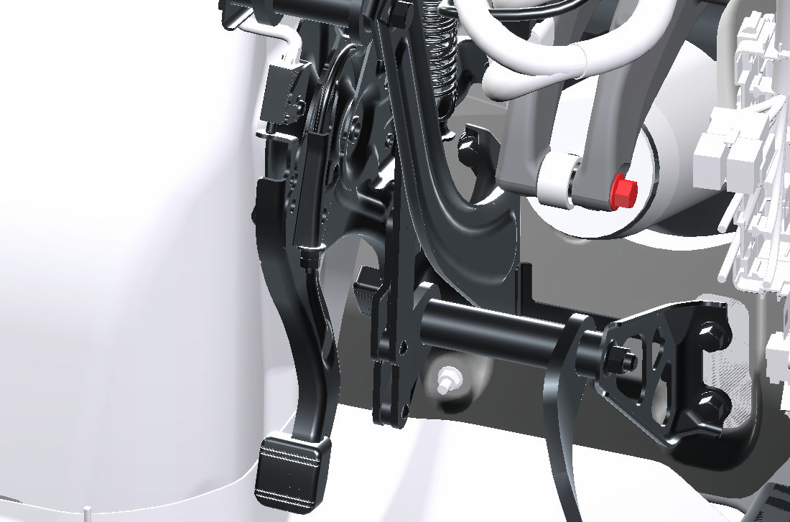
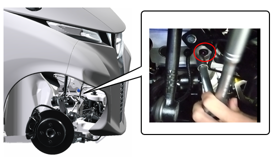
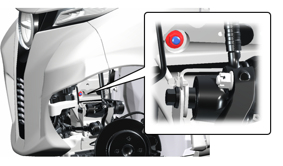
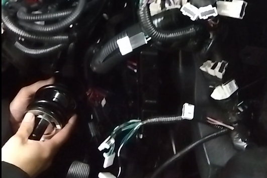
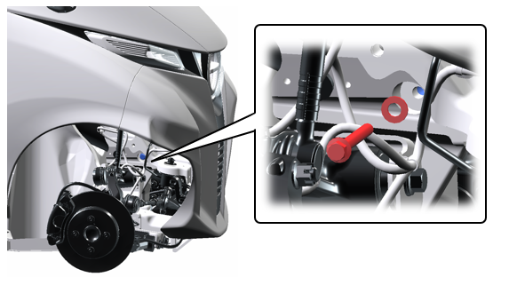
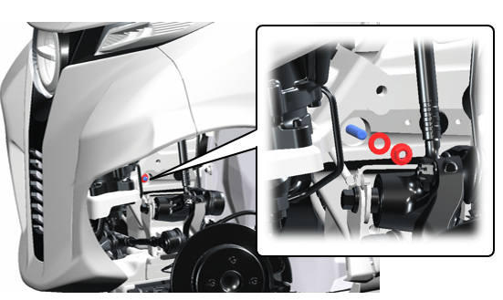

7-1-1 フロントショックアブソーバー
構成図
|
1 |
ABSORBER ASSY,SHOCK,FR (D8210-B1000) |
2 |
COVER, DASH PANEL HOLE (E5211-A1000) |
|
3 |
BRACKET, LEAN ACT (D8412-B1000) |
4 |
MEMBER, FR SUSPENSION (E1211-A1000) |
|
5 |
BOLT FLANGE, SHOCK ABSORBER, FR UPR (D8218-00650) |
6 |
BOLT FLANGE, SHOCK ABSORBER, FR LWR (D8228-00900) |
|
7 |
WASHER, UPR ARM (D9431-11220) |
8 |
NUT FLANGE (Z5120-00000) |
取り外し前作業
-
車両をジャッキアップし、フロントホイールを取り外す。
-
COVER, DASH PANEL HOLEを取り外す。4-2-5 ダッシュホールカバー
取り外し手順

1.ABSORBER ASSY,SHOCK,FR取り外し
-
ショックアブソーバー取り付けボルトを緩める。

-
ショックアブソーバー取り付けボルトに回り止めの工具をかける。

-
ナットを緩める。
-
ナットおよびワッシャーを取り外す。
-
ボルトを引き抜き、ワッシャーを取り外す。

-
室内側のショックアブソーバー取り付けボルトを取り外す。
-
ショックアブソーバーを室内側へ引き抜き、取り外す。
取り付け手順
1.ABSORBER ASSY,SHOCK,FR取り付け
-
室内側からショックアブソーバーを差し込む。
-
ボルトを取り付け、仮締めする。

-
ボルト、ワッシャーを取り付る。

-
ナット、ワッシャーを取り付る
-
ボルト側を固定し、ナットを仮締めする。

2.WHEEL ASSY,FR RHおよびWHEEL ASSY,FR LH取り付け
-
ホイールASSYを取り付け、NUT, HUBを手で締め付ける。
-
NUT, HUBを仮締めする。
-
車両をジャッキダウン後、図に示す順にNUT, HUBを本締めする。
3.ABSORBER ASSY,SHOCK,FR取り付け
-
ボルト側を固定し、ナットを締め付ける。
-
ボルトを締め付ける。
4.COVER, DASH PANEL HOLE取り付け
4-2-5 ダッシュホールカバー5.フロントタイヤ取り付け5-1 フロントタイヤ